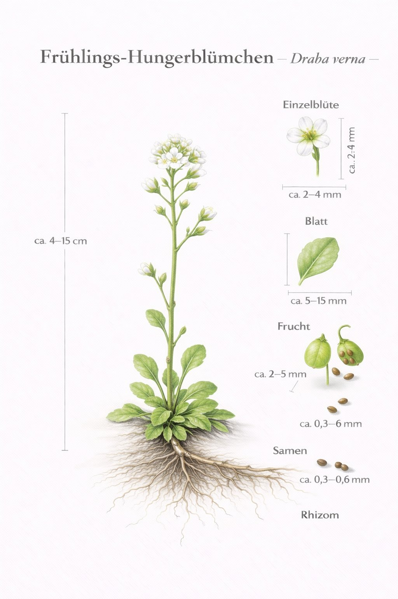

Farbe:
weiß
gelb
blau
violett
rot
grün
Blühzeit:
Jan
Feb
Mär
Apr
Mai
Jun
Jul
Aug
Sep
Okt
Nov
Dez
Lebensraum:
Wald
Wiese
Erweiterte Suche: Familie · Blütenaufbau
Familie:
Amaryllisgewächse Amaryllidaceae
Hahnenfußgewächse Ranunculaceae
Korbblütler Asteraceae
Kreuzblütler Brassicaceae
Liliengewächse Liliaceae
Lippenblütler Lamiaceae
Mohngewächse Papaveraceae
Nelkengewächse Caryophyllaceae
Primelgewächse Primulaceae
Raublattgewächse Boraginaceae
Rosengewächse Rosaceae
Sauerkleegewächse Oxalidaceae
Schmetterlingsblütler Fabaceae
Spargelgewächse Asparagaceae
Veilchengewächse Violaceae
Wegerichgewächse Plantaginaceae
Blütenaufbau:
sternförmig
lippenförmig
vier Blütenblätter
fünf Blütenblätter
Alle 40 Arten angezeigt

Schneeglöckchen
Galanthus nivalis
Amaryllisgewächse · Amaryllidaceae

Buschwindröschen
Anemone nemorosa
Hahnenfußgewächse · Ranunculaceae

Scharbockskraut
Ficaria verna
Hahnenfußgewächse · Ranunculaceae

Bärlauch
Allium ursinum
Amaryllisgewächse · Amaryllidaceae

Hohler Lerchensporn
Corydalis cava
Mohngewächse · Papaveraceae

Gefingerter Lerchensporn
Corydalis solida
Mohngewächse · Papaveraceae

Wald-Gelbstern
Gagea lutea
Liliengewächse · Liliaceae

Gelbes Windröschen
Anemone ranunculoides
Hahnenfußgewächse · Ranunculaceae

Wald-Sauerklee
Oxalis acetosella
Sauerkleegewächse · Oxalidaceae

Lungenkraut
Pulmonaria officinalis
Raublattgewächse · Boraginaceae

Leberblümchen
Hepatica nobilis
Hahnenfußgewächse · Ranunculaceae

Märzbecher
Leucojum vernum
Amaryllisgewächse · Amaryllidaceae

Frühlings-Platterbse
Lathyrus vernus
Schmetterlingsblütler · Fabaceae

Winterling
Eranthis hyemalis
Hahnenfußgewächse · Ranunculaceae

Goldnessel
Lamium galeobdolon
Lippenblütler · Lamiaceae

Gewöhnliche Sternhyazinthe
Scilla bifolia
Spargelgewächse · Asparagaceae

Gold-Hahnenfuß
Ranunculus auricomus
Hahnenfußgewächse · Ranunculaceae

Kriechender Günsel
Ajuga reptans
Lippenblütler · Lamiaceae

Wohlriechendes Veilchen
Viola odorata
Veilchengewächse · Violaceae

Knoblauchsrauke
Alliaria petiolata
Kreuzblütler · Brassicaceae

Große Sternmiere
Stellaria holostea
Nelkengewächse · Caryophyllaceae

Gänseblümchen
Bellis perennis
Korbblütler · Asteraceae

Wiesen-Schaumkraut
Cardamine pratensis
Kreuzblütler · Brassicaceae

Löwenzahn
Taraxacum officinale
Korbblütler · Asteraceae

Gamander-Ehrenpreis
Veronica chamaedrys
Wegerichgewächse · Plantaginaceae

Wildes Stiefmütterchen
Viola tricolor
Veilchengewächse · Violaceae

Acker-Hellerkraut
Thlaspi arvense
Kreuzblütler · Brassicaceae

Vogelmiere
Stellaria media
Nelkengewächse · Caryophyllaceae

Rote Taubnessel
Lamium purpureum
Lippenblütler · Lamiaceae

Sumpfdotterblume
Caltha palustris
Hahnenfußgewächse · Ranunculaceae

Huflattich
Tussilago farfara
Korbblütler · Asteraceae

Schlüsselblume
Primula veris
Primelgewächse · Primulaceae

Traubenhyazinthe
Muscari botryoides
Spargelgewächse · Asparagaceae

Blaustern
Scilla siberica
Spargelgewächse · Asparagaceae

Frühlings-Fingerkraut
Potentilla neumanniana
Rosengewächse · Rosaceae

Frühlings-Hungerblümchen
Erophila verna
Kreuzblütler · Brassicaceae

Küchenschelle
Pulsatilla vulgaris
Hahnenfußgewächse · Ranunculaceae

Persischer Ehrenpreis
Veronica persica
Wegerichgewächse · Plantaginaceae

Viermänniges Schaumkraut
Cardamine hirsuta
Kreuzblütler · Brassicaceae

Weiße Taubnessel
Lamium album
Lippenblütler · Lamiaceae